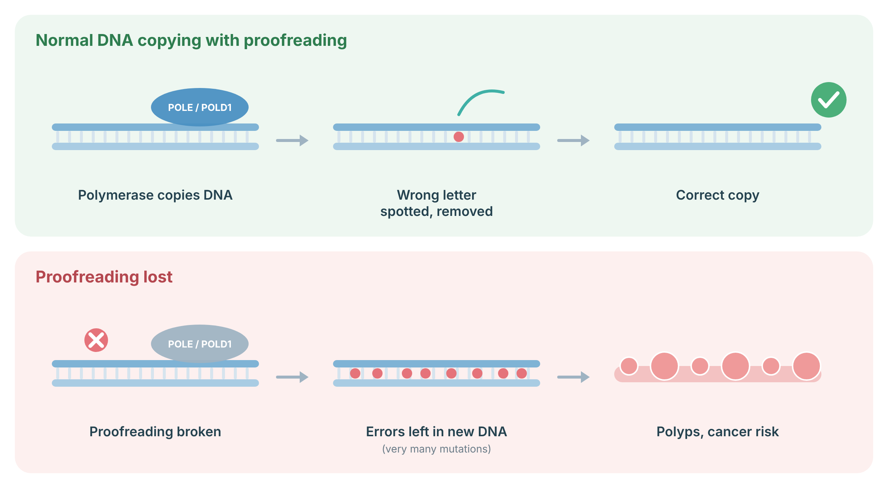

Understanding POLD1-associated polymerase proofreading-associated polyposis
POLD1 helps copy DNA accurately. Certain inherited changes weaken its proofreading function. This can allow DNA errors to build up and can lead to colon polyps, colorectal cancer, and sometimes endometrial or upper digestive tract tumours. Not every POLD1 result causes this syndrome. The exact variant matters.
POLD1 encodes the catalytic subunit of DNA polymerase delta. Pathogenic missense variants that disrupt the 3′ to 5′ exonuclease proofreading domain can cause autosomal dominant polymerase proofreading-associated polyposis (PPAP). Tumours may have an ultramutated single-nucleotide substitution profile and characteristic polymerase signatures. The phenotype ranges from few adenomas to oligopolyposis, colorectal cancer without marked polyposis, and multiple primary cancers.
POLD1-related PPAP is inherited in an autosomal dominant manner. Each child of a carrier has a 50% chance of inheriting the familial variant. Rare POLD1 variants can cause other non-PPAP phenotypes, including a progeroid/lipodystrophy syndrome. Those conditions require separate management.
Each time a cell divides, enzymes called polymerases (including POLE and POLD1) copy its DNA. They also proofread: when a wrong letter is added, they remove it and copy that spot again. When proofreading is broken, errors are left in the new DNA, mutations build up very quickly, and polyps and cancers (mainly bowel and endometrial) can develop.
POLD1: POLD1 copies the other DNA strand; the variants that raise cancer risk affect its proofreading part.

Sources: Palles C, et al. Nat Genet 2013;45:136–44 (PubMed).
Lifetime cancer risks by POLD1 variant category
The clearest increased risk is for colorectal cancer. Endometrial cancer risk also appears increased in women with a pathogenic proofreading-domain variant. Exact percentages remain uncertain because POLD1 is rare and published families were often selected because they had cancer.
| Variant category / outcome | Approximate lifetime risk | Clinical interpretation |
|---|---|---|
| Pathogenic proofreading-domain POLD1 variant: colorectal cancer | High Often quoted around 30% to 50% by age 70; some selected series suggest higher | Risk is clearly above population risk. Precision is low because cohorts are small and ascertainment-biased. |
| Pathogenic proofreading-domain POLD1 variant: endometrial cancer | Moderate to high Approximately 20% to 50% in reported carrier series; highly uncertain | POLD1 appears to confer greater endometrial risk than POLE, but robust population-based estimates are unavailable. |
| Duodenal / small-bowel cancer | Possibly increased Probably low absolute risk; no reliable percentage | Duodenal adenomas and cancers are reported. Baseline upper endoscopy is reasonable, but mortality benefit is unproven. |
| Brain, breast, ovarian, or other cancers | Uncertain | Reported in families, but association and magnitude are not established. Do not add routine organ screening solely because of POLD1. |
| Non-proofreading-domain POLD1 P/LP variant or POLD1 VUS | Not established | Manage using the specific molecular diagnosis, personal history, and family history. Do not assume PPAP. |
These ranges are evidence-calibrated approximations, not individual predictions. Personal risk may vary with the specific variant, sex, family history, adenoma burden, prior cancer, and quality of surveillance.
Surveillance for confirmed POLD1 proofreading-domain PPAP
Colonoscopy is the main preventive test. It can find and remove polyps before they become cancer. Most people should start between ages 25 and 30. The interval becomes shorter when polyps are found. A baseline upper endoscopy is reasonable around age 30 to 35. Report abnormal uterine bleeding promptly.
Confirmed pathogenic or likely pathogenic proofreading-domain variant
PPAP managementHigh-quality colonoscopy ROUTINE
Begin at age 25 to 30, or 2 to 5 years before the earliest colorectal cancer in the family if that cancer occurred before age 25. Repeat every 2 to 3 years if no polyps are found. If adenomas are found, repeat every 1 to 2 years, or sooner according to residual burden, size, histology, resection method, bowel preparation, and endoscopist judgment. Remove all clinically significant polyps when feasible.
Upper endoscopy with duodenal and ampullary assessment BASELINE / CONDITIONAL
Consider baseline EGD at age 30 to 35, earlier for symptoms or a strong family history. Ensure careful duodenal examination and visualization of the ampulla when feasible. Subsequent interval should be driven by findings. In a normal examination, a 3- to 5-year interval may be considered by an expert clinic, but this is consensus-based and not supported by outcome trials.
Endometrial symptom awareness ROUTINE
At every appropriate visit, review abnormal or prolonged bleeding, bleeding between periods, new bleeding after menopause, unusual discharge, or persistent pelvic symptoms. Investigate promptly. Endometrial biopsy is the preferred diagnostic test for unexplained bleeding.
Scheduled endometrial biopsy OPTIONAL, LOW-EVIDENCE
There is no POLD1-specific evidence that screening reduces mortality. For selected carriers who want surveillance after informed discussion, biopsy every 1 to 2 years from age 30 to 35 may be considered by extrapolation from other hereditary endometrial cancer syndromes. This is not a firm POLD1 guideline mandate.
Transvaginal ultrasound, CA-125, ovarian screening NOT ROUTINE
Do not use transvaginal ultrasound as routine endometrial screening in premenopausal patients. It may assist diagnostic evaluation after menopause at clinician discretion. CA-125 and ovarian ultrasound have no established role for asymptomatic POLD1 carriers.
Brain MRI, breast MRI, pancreatic, urinary, thyroid, or whole-body screening NOT RECOMMENDED SOLELY FOR POLD1
Use population screening and personal/family-history indications. Investigate symptoms without delay.
Management when the POLD1 result does not establish PPAP
A POLD1 variant of uncertain significance is not a positive diagnosis. Some pathogenic POLD1 variants affect other functions and may not cause hereditary cancer. Screening should follow your own polyp history and family history until the result is clarified.
VUS, likely benign variant, or variant without evidence of proofreading dysfunction
No automatic PPAP protocolDo not perform predictive testing of relatives for a VUS and do not use a VUS alone to recommend colectomy, hysterectomy, or intensive extracolonic surveillance. Reassess the laboratory classification periodically. If the personal or family history itself meets criteria for enhanced colorectal surveillance, manage that phenotype independently of the uncertain result.
Risk-reducing surgery and hormone considerations
Most colon polyps can be managed with colonoscopy for many years. Surgery is considered when the number, size, location, or pathology of polyps makes safe endoscopic control unrealistic, or when cancer develops. Preventive hysterectomy is not routinely required for every POLD1 carrier.
Colorectal surgery
Refer to colorectal surgery when there is colorectal cancer, high-grade dysplasia, rapidly increasing adenoma burden, repeated incomplete clearance, polyps that cannot be safely removed endoscopically, or inability to maintain adequate surveillance. The extent of surgery should be individualized to rectal burden, cancer location, age, comorbidity, functional priorities, and willingness to continue surveillance. Any retained rectum, colon, or pouch requires lifelong endoscopic follow-up, often every 6 to 12 months initially when burden is high.
Gynecologic surgery
Evidence is insufficient to recommend a specific age for prophylactic hysterectomy in POLD1. After childbearing, hysterectomy may be discussed for a confirmed high-risk proofreading-domain variant, especially with a strong family history, prior atypical endometrial hyperplasia, persistent abnormal bleeding, or when another abdominal operation is planned. Oophorectomy is not routinely indicated solely for POLD1 because ovarian risk is unproven.
Hormones
There are no POLD1-specific data that combined oral contraception, progestin therapy, or a levonorgestrel intrauterine system prevents endometrial cancer. These may be used for standard contraceptive or gynecologic indications after individualized assessment. If ovaries are removed before natural menopause for another reason, discuss menopausal hormone therapy using standard risk-benefit principles.
Chemoprevention and medical prevention
No medicine has been proven to prevent cancer specifically in POLD1 carriers. Aspirin can cause bleeding and should not replace colonoscopy. Decisions about aspirin should be based on a person’s overall cardiovascular and bleeding risks, not on POLD1 alone.
Routine aspirin chemoprevention is not established for PPAP. The strongest hereditary-cancer aspirin data come from Lynch syndrome and should not be assumed to apply to POLD1. Canadian low-dose aspirin tablets are commonly 81 mg, but no POLD1-specific dose or duration can be recommended.
| Bleeding-risk tier | Examples | Approach |
|---|---|---|
| Lower | No prior ulcer or GI bleed, no anticoagulant, controlled blood pressure | Aspirin may still cause harm. Use only for another accepted indication after clinician review. |
| Intermediate | Age over 60, dyspepsia, NSAID use, corticosteroids, heavy alcohol use, renal disease | Generally avoid starting solely for cancer prevention. Review gastroprotection and drug interactions if otherwise indicated. |
| High | Prior GI bleeding or peptic ulcer, bleeding disorder, concurrent anticoagulant or dual antiplatelet therapy, uncontrolled hypertension | Do not start for PPAP chemoprevention. Seek specialist advice if there is a separate cardiovascular indication. |
COX-2 inhibitors and other polyp-suppressing agents are investigational in PPAP and may carry cardiovascular, renal, and gastrointestinal harms. They should not replace endoscopy or surgery.
Genetic counselling and family planning
First-degree relatives usually have a 50% chance of carrying the same familial variant. Testing adult relatives can identify who needs early colonoscopy and who can usually return to screening based on their own history. Children are usually tested only when the result would change care during childhood.
- Confirm that the proband has a germline pathogenic or likely pathogenic variant consistent with PPAP. Consider testing a second tissue if mosaicism or clonal hematopoiesis is suspected.
- Offer targeted cascade testing to adult first-degree relatives, then extend through the pedigree.
- Because routine colonoscopy generally begins at 25 to 30, testing is often offered in late adolescence or early adulthood, with earlier testing when the family has very early polyposis or cancer.
- Document a three-generation pedigree, including adenoma counts, pathology, colorectal and endometrial cancers, upper-GI tumours, ages at diagnosis, and genetic reports.
- Discuss reproductive options without pressure: natural conception with postnatal testing, prenatal diagnosis, or IVF with preimplantation genetic testing for monogenic disease where available.
- Do not use a VUS for predictive testing or reproductive decision-making.
Lifestyle and nutrition
Healthy habits cannot remove inherited risk, but they support general health and may reduce colorectal cancer risk. Do not let lifestyle changes delay colonoscopy.
Recommend regular physical activity, weight management without restrictive dieting, avoidance of tobacco, limited alcohol, and a dietary pattern rich in vegetables, fruit, legumes, whole grains, and other fibre-containing foods. Limit processed meat and keep red meat moderate. Correct vitamin deficiencies when present. No supplement, probiotic, fasting program, or special diet has been shown to neutralize POLD1-related risk.
Cancer treatment implications and tumour testing
If cancer develops, the tumour may have a very high number of DNA mutations. This can affect treatment choices. The oncology team should know about the inherited POLD1 variant and should test the tumour appropriately.
Proofreading-deficient tumours can be ultramutated and may show polymerase-associated mutational signatures even when microsatellite stable. Tumour next-generation sequencing should assess tumour mutational burden, the somatic second hit, microsatellite status, mismatch-repair proteins, and clinically relevant targets. Immune-checkpoint inhibitors may be effective in selected advanced hypermutated or ultramutated tumours, but treatment must follow tumour-specific regulatory indications and multidisciplinary oncology review. A germline POLD1 result alone is not sufficient to prescribe immunotherapy.
Emerging and investigational prevention
Research is exploring blood tests, stool DNA, tumour-signature testing, and medicines that might reduce polyps. These approaches are not ready to replace standard surveillance.
Trial-only or research use
- Multi-cancer early detection blood tests and circulating tumour DNA for unaffected carriers.
- Artificial-intelligence assisted colonoscopy as a syndrome-specific intervention.
- Polymerase-signature-guided risk models and variant-specific penetrance estimates.
- Immune or vaccine prevention strategies.
- Long-term aspirin, celecoxib, or other pharmacologic prevention specifically for PPAP.
Participation in registries and prospective hereditary polyposis studies is encouraged because current risk estimates and extracolonic recommendations are limited by small cohorts.
Summary of recommendations
The plan depends first on whether the variant truly causes proofreading-associated polyposis. For a confirmed pathogenic proofreading-domain variant, colonoscopy is essential. Other screening is individualized.
Confirmed PPAP
Colonoscopy: age 25 to 30; every 2 to 3 years if clear, every 1 to 2 years if polyps.
EGD: consider baseline age 30 to 35; follow findings.
Endometrium: symptom education and prompt biopsy; optional periodic biopsy after discussion.
VUS or non-established variant
No automatic PPAP surveillance. Base care on personal adenomas, cancer history, and pedigree. Revisit classification.
Surgery
Consider when cancer or polyp burden cannot be safely controlled endoscopically. Hysterectomy is individualized. Routine oophorectomy is not supported.
Across all groups
Genetic counselling, cascade testing for a confirmed familial variant, healthy lifestyle, rapid evaluation of symptoms, and management in an experienced hereditary GI cancer program.
References
This protocol uses major guideline recommendations and key PPAP studies. The evidence base is small, so the date and version of each guideline matter.
- National Comprehensive Cancer Network. NCCN Clinical Practice Guidelines in Oncology: Genetic/Familial High-Risk Assessment: Colorectal, Endometrial, and Gastric. Version 1.2024.
- Palles C, Martin L, Domingo E, et al. The clinical features of polymerase proof-reading associated polyposis (PPAP) and recommendations for patient management. Fam Cancer. 2022;21:197-209.
- Briggs S, Tomlinson I. Germline and somatic polymerase epsilon and delta mutations define a new class of hypermutated colorectal and endometrial cancers. J Pathol. 2013;230:148-153.
- Palles C, Cazier JB, Howarth KM, et al. Germline mutations affecting the proofreading domains of POLE and POLD1 predispose to colorectal adenomas and carcinomas. Nat Genet. 2013;45:136-144.
- Valle L, Hernández-Illán E, Bellido F, et al. New insights into POLE and POLD1 germline mutations in familial colorectal cancer and polyposis. Hum Mol Genet. 2014;23:3506-3512.
- Bellido F, Pineda M, Aiza G, et al. POLE and POLD1 mutations in 529 kindred with familial colorectal cancer and/or polyposis: review of reported cases and recommendations for genetic testing and surveillance. Genet Med. 2016;18:325-332.
- Monahan KJ, Bradshaw N, Dolwani S, et al. Guidelines for the management of hereditary colorectal cancer from the British Society of Gastroenterology, Association of Coloproctology of Great Britain and Ireland and United Kingdom Cancer Genetics Group. Gut. 2020;69:411-444.
- Genomics Education Programme, NHS England. Polymerase proofreading-associated polyposis. Reviewed resource, accessed July 2026.
- Gupta S, Lieberman D, Anderson JC, et al. Recommendations for follow-up after colonoscopy and polypectomy: a consensus update by the US Multi-Society Task Force on Colorectal Cancer. Gastroenterology. 2020;158:1131-1153.e5.
- Vilar E, Gruber SB. Microsatellite instability in colorectal cancer: the stable evidence. Nat Rev Clin Oncol. 2010;7:153-162.